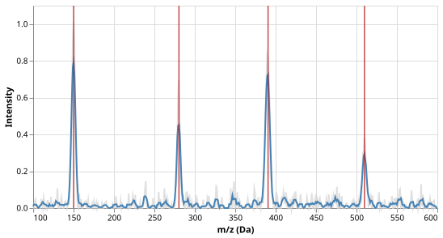
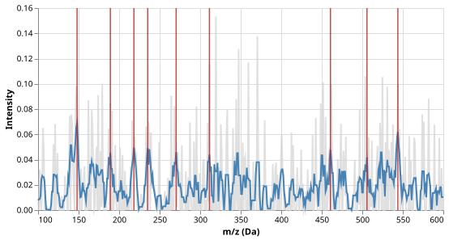

Peak Detection in Mass Spectra
The Problem
- A mass spectrometer measures how many ions in a sample have each mass-to-charge ratio (m/z)
- The output is a spectrum, i.e., a curve of intensity versus m/z, with a peak wherever a compound is present
- In practice the spectrum is noisy, so the peaks must be found algorithmically rather than by eye
- Peak detection is a preprocessing step in proteomics, metabolomics, and analytical chemistry
Representing a Spectrum
- A synthetic spectrum is a sum of Gaussian peaks at known m/z values plus Gaussian noise:
$$I(m) = \sum_k h_k \exp\!\left(-\frac{(m - \mu_k)^2}{2\sigma_k^2}\right) + \varepsilon, \qquad \varepsilon \sim \mathcal{N}(0,\,\sigma_\text{noise}^2)$$
- $\mu_k$, $h_k$, and $\sigma_k$ are the center, height, and width of peak $k$
- Intensities are clipped to zero because a negative ion count has no physical meaning
MZ_MIN = 100.0 # lower end of m/z range (daltons)
MZ_MAX = 600.0 # upper end of m/z range (daltons)
N_POINTS = 500 # number of evenly-spaced m/z values
# Each peak is (center_mz, height, sigma): three compounds at known masses.
# Heights are relative to the tallest peak (1.0).
PEAKS = [
(150.0, 1.00, 2.0), # compound A
(280.0, 0.65, 1.5), # compound B
(390.0, 0.85, 2.5), # compound C
(510.0, 0.45, 2.0), # compound D
]
DEFAULT_NOISE = 0.05 # Gaussian noise std dev relative to tallest peak
def make_spectrum(
peaks=PEAKS,
noise_scale=DEFAULT_NOISE,
n_points=N_POINTS,
mz_min=MZ_MIN,
mz_max=MZ_MAX,
seed=SEED,
):
"""Return (mz, intensity) for a synthetic mass spectrum.
The signal is a sum of Gaussian peaks, each defined by a
(center_mz, height, sigma) triple. Independent Gaussian noise
with standard deviation `noise_scale` is added at every point.
Negative intensities are clipped to zero.
"""
rng = np.random.default_rng(seed)
mz = np.linspace(mz_min, mz_max, n_points)
intensity = np.zeros(n_points)
for center, height, sigma in peaks:
intensity += height * np.exp(-0.5 * ((mz - center) / sigma) ** 2)
intensity += rng.normal(0.0, noise_scale, n_points)
intensity = np.maximum(intensity, 0.0)
return mz, intensity
Smoothing
- Noise causes random local maxima that look like peaks but carry no chemical information
- A moving-average filter replaces each point with the mean of its $w$ nearest neighbours, reducing point-to-point variance by a factor of $w$:
$$\hat{I}_i = \frac{1}{w} \sum_{j=i-\lfloor w/2 \rfloor}^{i+\lfloor w/2 \rfloor} I_j$$
- Smoothing attenuates noise without shifting peak positions as long as $w$ is small relative to the peak width
def smooth(intensity, window=SMOOTH_WINDOW):
"""Return the moving-average of `intensity` over `window` points.
Uses np.convolve with mode='same', which zero-pads at both ends.
The first and last floor(window/2) values are therefore attenuated;
this is acceptable because real spectra rarely have peaks at the
very edge of the m/z range.
"""
kernel = np.ones(window) / window
return np.convolve(intensity, kernel, mode="same")
The noise standard deviation before smoothing is $\sigma_\text{noise} = 0.05$. After applying a moving-average filter with window w = 5, what is the approximate standard deviation of the smoothed noise?
- 0.05 (unchanged)
- Wrong: averaging reduces variance — a filter that left noise unchanged would be useless.
- $0.05 / \sqrt{5} \approx 0.022$
- Correct: averaging w independent values reduces variance by $1/w$, so standard deviation by $1/\sqrt{w}$.
- 0.05 / 5 = 0.010
- Wrong: the variance (not the standard deviation) is divided by w; the std dev is divided by $\sqrt{w}$.
- $0.05 \times \sqrt{5} \approx 0.112$
- Wrong: smoothing reduces noise, not increases it.
Peak Detection
- After smoothing, a peak candidate is any point that is a strict local maximum and whose smoothed intensity exceeds a threshold
- A single broad peak can produce several adjacent local maxima after smoothing
- Non-maximum suppression keeps only
the tallest candidate within a window of
min_distanceindex positions
def detect_peaks(mz, intensity, threshold=THRESHOLD, min_distance=MIN_DISTANCE):
"""Return the m/z positions of peaks in `intensity`.
A candidate peak must satisfy two conditions:
1. Its smoothed intensity exceeds `threshold`.
2. It is a strict local maximum (greater than both neighbours).
When two candidates are within `min_distance` indices of each other,
only the taller one is kept. This non-maximum suppression prevents
a single broad peak from being reported multiple times.
"""
# Step 1: strict local maxima above threshold.
is_max = (intensity[1:-1] > intensity[:-2]) & (intensity[1:-1] > intensity[2:])
above = intensity[1:-1] > threshold
candidates = np.where(is_max & above)[0] + 1 # +1: offset for the slice
if len(candidates) == 0:
return np.array([])
# Step 2: non-maximum suppression — greedily keep tallest in each neighbourhood.
order = np.argsort(-intensity[candidates])
kept = []
for i in order:
idx = candidates[i]
if all(abs(idx - k) >= min_distance for k in kept):
kept.append(idx)
kept.sort()
return mz[np.array(kept)]
Put these peak-detection steps in the correct order.
- Generate a spectrum: sum Gaussian peaks and add noise
- Apply a moving-average filter to smooth the spectrum
- Find all points that are strict local maxima above the threshold
- Apply non-maximum suppression within
min_distancepositions - Return the m/z values of the surviving candidates
Match each parameter to the problem it is designed to address.
| Parameter | Solves |
|---|---|
SMOOTH_WINDOW |
Prevents one broad peak from being reported as multiple peaks |
THRESHOLD |
Attenuates point-to-point noise before the peak search |
MIN_DISTANCE |
Rejects local maxima that are only noise fluctuations |

What the Detector Finds in Pure Noise
- The same detector, with the same threshold, applied to a spectrum that contains no signal at all produces false peaks
def make_pure_noise(
noise_scale=DEFAULT_NOISE,
n_points=N_POINTS,
mz_min=MZ_MIN,
mz_max=MZ_MAX,
seed=SEED,
):
"""Return (mz, intensity) containing only Gaussian noise, no signal peaks.
This is used to demonstrate the false-positive behaviour of the
peak detector when the threshold is set too low.
"""
rng = np.random.default_rng(seed)
mz = np.linspace(mz_min, mz_max, n_points)
intensity = np.maximum(rng.normal(0.0, noise_scale, n_points), 0.0)
return mz, intensity

- With noise standard deviation $\sigma_\text{noise} = 0.05$ and window $w = 5$, the smoothed noise has standard deviation $0.05 / \sqrt{5} \approx 0.022$
- A threshold of 0.04 is roughly $1.8\sigma$
- Roughly 7% of smoothed values exceed it, so several local maxima among them are expected
- The operating threshold of 0.10 is $4.5\sigma$
- Fewer than one point in 100,000 exceeds it by chance, making false positives negligible for a 500-point spectrum
SMOOTH_WINDOW = 5 # number of points in the moving-average filter;
# wide enough to suppress point-to-point noise,
# narrow enough not to blur nearby peaks
THRESHOLD = 0.10 # minimum smoothed intensity to be reported as a peak;
# chosen to be roughly 2× the smoothed-noise standard
# deviation (see "Choosing the threshold" in lesson)
MIN_DISTANCE = 15 # minimum index separation between reported peaks;
# at 500 points over 500 Da this equals 1 Da per index,
# so MIN_DISTANCE = 15 means peaks must be ≥ 15 Da apart
The noise figure shows 9 false peaks at threshold 0.04 and 0 false peaks at threshold 0.10. What is the most important conclusion?
- The detector is broken — a correct detector should never find peaks in pure noise
- Wrong: any threshold-based detector produces false positives when the threshold is below the noise floor — this is expected behaviour, not a bug.
- A threshold of 0.10 is always the right choice for any spectrum
- Wrong: the right threshold depends on the noise level and peak heights; 0.10 is calibrated specifically to this synthetic dataset.
- The threshold must be set well above the smoothed noise floor to suppress false positives
- Correct: at 0.04 $\approx 1.8\sigma$ roughly 7% of smoothed noise exceeds the threshold; at 0.10 $\approx 4.5\sigma$ fewer than 1 in 100 000 values do.
- Increasing the smoothing window eliminates false positives at any threshold
- Wrong: more smoothing reduces noise amplitude but cannot reduce it to zero; false positives persist if the threshold is too low.
Testing
- Smoothing a constant
- A constant signal has no noise to reduce; smoothing must leave it unchanged
(except at the boundaries, which are zero-padded by
np.convolve). - Variance reduction
- The defining purpose of the filter is to reduce variance. If smoothing increases variance the implementation is wrong.
- Length preservation
np.convolvewithmode='same'always returns an array of the same length as the input. This is worth checking explicitly because changing the mode would silently break downstream code.- Known peak positions
- The detector must find all four compounds within a tolerance that reflects the grid spacing (1 Da per index) and is well below the minimum peak separation (> 100 Da). A tolerance of 5 Da is used: it is 5X the grid spacing and 20X smaller than the nearest adjacent peaks, giving a clear pass/fail criterion without being unnecessarily tight.
- Threshold at infinity
- Raising the threshold until it exceeds all values must produce an empty result. This guards against off-by-one errors in the threshold comparison.
- Non-maximum suppression
- The test constructs two well-separated Gaussians (10 Da apart, sigma = 2 Da)
that produce two distinct local maxima in the intensity array.
With
min_distance = 12, only the taller is kept; withmin_distance = 5, both survive. - Pure noise
- Running the detector on pure noise at a low threshold must return at least one false peak, confirming the expected false-positive behaviour. Running at the operating threshold must return none, confirming it is set high enough.
import numpy as np
from generate_spectrum import make_spectrum, make_pure_noise, PEAKS, DEFAULT_NOISE
from massspec import smooth, detect_peaks, SMOOTH_WINDOW, THRESHOLD
def test_smooth_constant():
# Smoothing a constant signal must return the same constant everywhere.
intensity = np.full(50, 3.7)
result = smooth(intensity, window=5)
# Edges are zero-padded by convolve mode='same'; only test the interior.
interior = result[SMOOTH_WINDOW // 2 : -(SMOOTH_WINDOW // 2)]
assert np.allclose(interior, 3.7)
def test_smooth_reduces_variance():
# Smoothing must reduce point-to-point variance.
rng = np.random.default_rng(0)
noise = rng.normal(0, 1, 200)
assert smooth(noise, window=7).var() < noise.var()
def test_smooth_preserves_length():
intensity = np.ones(123)
assert len(smooth(intensity, window=5)) == 123
def test_detect_known_peaks():
# The detector must find all four compound peaks within 5 Da of their true centers.
# Tolerance of 5 Da is well above the grid spacing (1 Da) and well below
# the separation between any two peaks (> 100 Da).
mz, raw = make_spectrum()
detected = detect_peaks(mz, smooth(raw))
true_centers = np.array([p[0] for p in PEAKS])
assert len(detected) == len(true_centers), (
f"Expected {len(true_centers)} peaks, got {len(detected)}"
)
for center, found in zip(true_centers, detected):
assert abs(found - center) <= 5.0, (
f"Peak at {center} Da detected at {found:.1f} Da (> 5 Da error)"
)
def test_no_peaks_below_threshold():
# A threshold above all intensities must return no peaks.
mz, raw = make_spectrum()
detected = detect_peaks(mz, smooth(raw), threshold=999.0)
assert len(detected) == 0
def test_min_distance_suppresses_duplicates():
# Use a 101-point grid (1 Da per index) so index distance equals Da distance.
# Peaks at 50 and 60 Da are 10 indices apart and have distinct local maxima.
# min_distance=12 merges them to the taller one; min_distance=5 keeps both.
mz = np.linspace(0, 100, 101)
intensity = np.exp(-0.5 * ((mz - 50) / 2.0) ** 2) + 0.9 * np.exp(
-0.5 * ((mz - 60) / 2.0) ** 2
)
one = detect_peaks(mz, intensity, threshold=0.1, min_distance=12)
two = detect_peaks(mz, intensity, threshold=0.1, min_distance=5)
assert len(one) == 1
assert len(two) == 2
def test_pure_noise_produces_false_positives():
# Running the detector on pure noise with a threshold close to the noise
# floor must produce false positives, demonstrating that threshold choice
# matters. The smoothed-noise std dev is DEFAULT_NOISE / sqrt(SMOOTH_WINDOW)
# ≈ 0.022. A threshold of 0.04 (~1.8 sigma) should yield several false peaks.
mz, raw = make_pure_noise(noise_scale=DEFAULT_NOISE)
smoothed = smooth(raw)
low_threshold = 0.04
false_peaks = detect_peaks(mz, smoothed, threshold=low_threshold)
assert len(false_peaks) > 0, (
"Expected false positives from pure noise at a low threshold"
)
# And at the normal threshold, noise alone must not trigger any peaks.
assert len(detect_peaks(mz, smoothed, threshold=THRESHOLD)) == 0, (
"Normal threshold should reject all noise peaks"
)
Exercises
Savitzky-Golay filter
Replace the moving-average smoother with a Savitzky-Golay filter, which fits a low-degree
polynomial to each window rather than taking a plain mean. The advantage is that the filter
preserves peak heights more accurately.
Use scipy.signal.savgol_filter and compare the peak positions and heights it reports
to those from the moving-average filter on the same synthetic spectrum.
Baseline correction
Real spectra often have a slowly varying baseline (background signal) that shifts all
intensities upward. Simulate this by adding a low-frequency sinusoid
$B(m) = 0.3 \sin(2\pi m / 800)$ to the synthetic spectrum before adding noise.
Implement subtract_baseline(mz, intensity, window) that uses a moving minimum over a
large window to estimate and remove the baseline, then show that peak detection on the
corrected spectrum recovers the same four compounds.
Peak area
The area under a Gaussian peak is $h \sigma \sqrt{2\pi}$ and is proportional to compound
abundance. After detecting each peak, fit a Gaussian to the smoothed signal in a small
window around it using scipy.optimize.curve_fit and report the fitted height, center,
and area. Compare the fitted values to the ground truth in PEAKS.
Receiver operating characteristic
Use make_pure_noise to generate 200 noise-only spectra and make_spectrum to generate
200 signal spectra. For each, record whether the detector finds at least one peak.
Sweep the threshold from 0.01 to 0.30 and plot the ROC curve (true positive rate vs.
false positive rate). Report the threshold that maximises the F1 score.